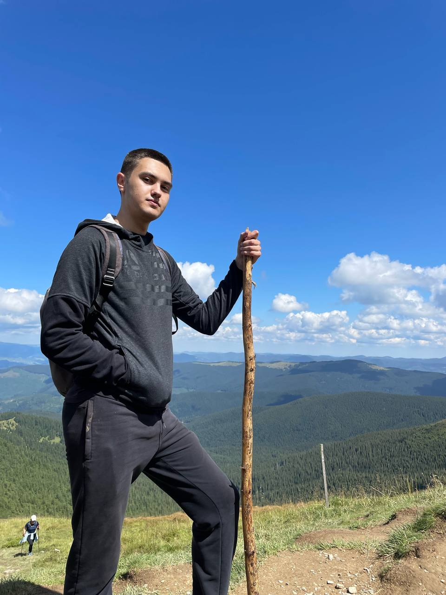
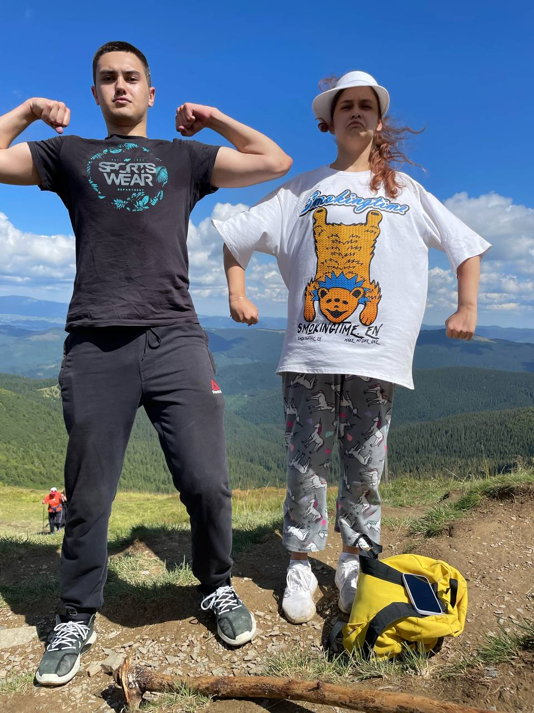

Олегса Довбуш народився в селі Печеніжині Коломийського повіту 1700 року. Народився в сім’ї селянина, який був ковалем і майстром на будівництві церков. Розказують, що Олегса Довбуш не ходив своїми ногами до шести років. Він народився калікою. А в шість років, сидівши на призьбі, він побачив, як душиться у ворині * телятко. Побачивши це, він доліз до того телятка і врятував його. З того часу почав Олегса ходити.
І тоді почав він освоювати свою першу професію — пастухував. Є така легенда. Коли він пас вівці, то побачив чорта. А всі пастухи мали з собою рушниці. Побачивши чорта, він вистрелив у нього. Тоді з неба злетів ангел і сказав:
— Ти проживеш недовге життя, але залишишся в пам’яті людей. І помреш ти від ярої пшениці і свого волосу.
Другу професію Олегса Довбуш освоював з батьком, працював ковалем. І третю професію він мав — будував церкви. Він будував церкву в Космачі. І йому сподобалася гарна дівчина, гуцулочка Марічка.
А перед тим, як звінчатися, обов’язково треба було сповідатися в церкві. І до тієї церкви приходить Олегса Довбуш з Марічкою сповідатися.
А пан Яблонський, на честь якого названо селище Яблунів, приїхав із своїм сином на ту Службу. І його син набирає собі для розваги дівчат, бо він був пан. І сподобалася йому Марічка. Він наказує своїм воякам, щоб Марічку схопили і привезли до його оселі. Олексі це не сподобалося і він молодого пана вбив прямо перед церквою з одного удару.
Люди, які це бачили, повтікали в гори, щоб не попасти в тюрму. І Олегса втік у гори. Ще тоді, коли він був пастухом, Олегса бачив, як пани знущалися над селянами. І він сказав: «Я не буду ґаздувати, а вони не будуть панувати».
Є ще така легенда. Коли Олегса втік у гори, він зустрів старого опришка, загін якого було розбито панами. Опришок той уже помирав. І сказав він Олексі:
— Ти файний хлопець, ти зможеш зібрати загін, я бачу по тобі.
І Олегса зібрав загін. Він випробовував хлопців по-всякому. Наприклад, зрубували дерево і воно падало між двома скалами, і по цьому дереву треба було пройти. Хто не пройшов, той у його загін не проходив. А ще таке випробування було: казали класти руку на пеньок і бартку * забивали в пеньок попри самі пальці, так, що іноді відрубували нігті, у кого були довгі. Забрав руку — в загін не приймуть.
Зібравши таким чином загін, Олегса Довбуш почав бити панів і грабувати їх добро. Відібрані в панів золото й худобу віддавали бідним. Само собою, панам це не подобалося, і вони шукали різні способи, щоб знищити Довбуша.
Пани схопили Марічку і завезли у Коломию, знаючи, що Довбуш обов’язково прийде її визволяти. І вони схоплять його. І Довбуш поїхав визволяти Марічку. Поїхав без своїх хлопців, навіть хлопцям не сказав. Але хлопці, дізнавшись про те, поїхали навздогін. А Довбуша було схоплено і вже його вели на шибеницю. Але над’їхали хлопці і врятували і Марічку, і Олексу.
Після цього батьки примусили Марічку вийти заміж за багатого гуцула Дзві́нчука. Але Олегса далі до неї ходив, бо в них була дуже сильна любов. Олегса любив Марічку і Марічка любила його.
А крім панів були ще й гуцули, які не любили Олексу Довбуша. Це були брати Мочернаки, які оба́ давали по шапці грошей за голову Олекси Довбуша. Але Олегса Довбуш з ними розправився, зразу з обома.
А ще був такий Дідушко, який теж давав шапку грошей за голову Довбуша. Одного разу Довбуш приїхав до оселі Дідушка. Був обід, якраз доїли корови. Довбуш хотів переговорити з Дідушком і послав до нього свого опришка. А Дідушко побив того опришка. Той Дідушко був такий здоровий, що до нього було трудно підібрати противника.
Розгніваний Довбуш заходить до нього на подвір’я, зв’язує його і його сина шнурком, піднімає їх одною рукою і танцює гуцульський танець «Аркан». Після того було порубано бартками і Дідушка, і його сина. А надоєне молоко було вилито в річку. З того часу називається річка Білий Черемош.
Є ще докази того, що сестра і мати Олекси переховувалися в селищі Яремче. Коли Олегса приїжджав до свої матері і сестри, він кожного разу хотів купатися у водоспаді. Ставав на пагорбі і свистав у пальці. Тоді пани вискакували з водоспаду і ховалися по кущах. Бо приїхав Олегса. А коли Олегса з хлопцями з водоспаду виходили, пани поверталися до водоспаду.
Одного разу з загону опришків утік найкращий друг Олекси. І забрав той опришок з собою половину награбованого опришками золота. Довбуш не вірив, що може бути така зрада, і через три роки найшов він його в одній із старих церквів. Побачивши його, Олегса викликав його надвір і став з ним говорити. Микола зрозумів, що розмова буде серйозна і Довбуш його вб’є.
Довбуш спитав:
— Чому ти втік від мене? І де мої гроші?

Микола повів рукою направо і показав, що збоку будується нова церква. За ті гроші. Олегса йому сказав, що тут не всі гроші. На це Микола йому відповів, що решта грошей у Львові, де за них виливається дзвін. І ще сказав Микола, що він був покараний за те, що кинув забагато золота в метал, з якого виливався дзвін.
І Олегса Довбуш, піднявши невеличкого Миколу обома руками і поцілувавши його в чоло, відпустив його на всі чотири сторони.
Пани шукали різні можливості, щоб знищити Довбуша. І вони вирішили використати Дзвінчука. Дзвінчук був дуже багатий і хотів бути ще багатшим. Довбуш ходив до Марічки тоді, коли Дзвінчук працював у лісі. А в ліс він ходив на тиждень, на два. І пани підкупили Дзвінчука.
Дзвінчук зробив кулю, яка була набита ярою пшеницею. І Довбушів волос був у тій кулі. І перед тою кулею було проведено дванадцять богослужінь.
Дзвінчук сховався на горищі. Прийшов Довбуш, а Марічка його в хату не пускає. Вона знає, що тут є зрада, і не хоче його пустити. А Довбуш був хлопець бравий. Він подумав: «Як це Марічка не пускає мене в хату?» Він виламав двері. Довбуш зайшов, а Дзвінчук у нього стрілив. У пісні як співається?
Як поцілив у праве плече, А з лівого кровця тече.
Тут розповідають по-різному. Одні кажуть, що Марічка відвела його в ліс і втекла з ним. Він дав їй багато золота, і вона виїхала в Польщу, де прожила сто років.
А інші розказують, що Довбуш свиснув у свої білі пальці, як співається в пісні, хлопці прибігли і питаються в нього:
— Що зробити? Чи цю хату спалити, чи Дзвінчука вбити? Чи її вбити? А він сказав:
— Ні, я її не вб’ю, бо я її дуже люблю. А Дзвінчука лишіть, його народ проклене. І хату не паліть. Нехай він жиє в цій хаті.
А в пісні співається, що він просить хлопців занести його в Чорногору. Але це не було можливе, бо була зрада. Пани були тут як тут, вояки вже були. Вони просто віднесли його в ліс і накрили гіллям. І він їм наказав, щоби вони розійшлися по хатах, сховали бартки, сховали пістолі, бо вони без нього нічого не зможуть зробити.
І він там помер. Три дні він там мертвий лежав. А пани найшли чоловіка і заплатили йому багато грошей, аби він пішов і подивився, чи він дійсно мертвий. І тоді його було відвезено в Коломию. В Коломиї тіло Довбуша було розчленовано на дванадцять частин. І ті частини були розвішані в цих місцевостях, щоб налякати опришків.
А дехто каже, що тіло Довбуша не найшли, а найшли тіло іншої людини.